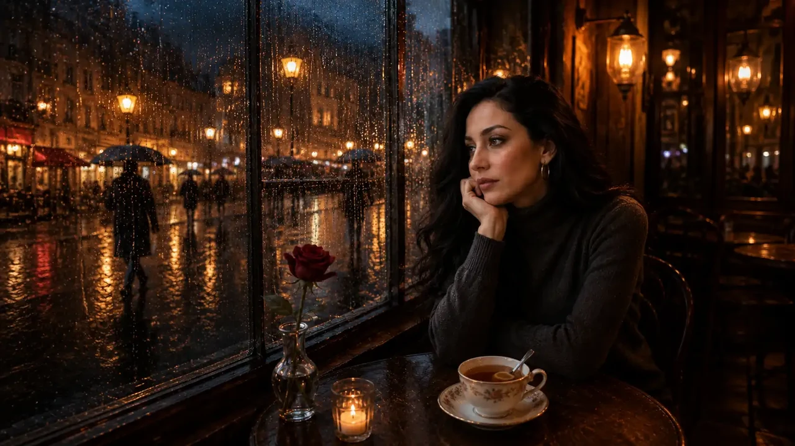
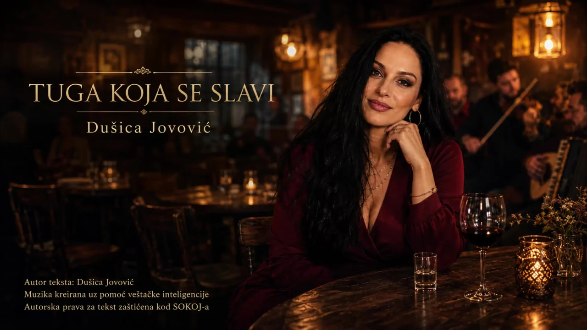
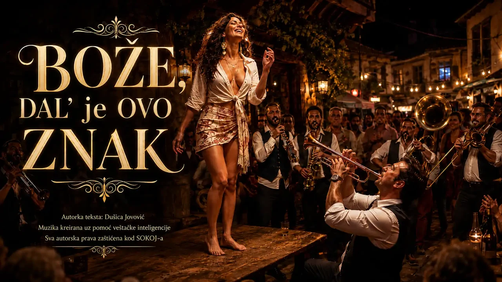
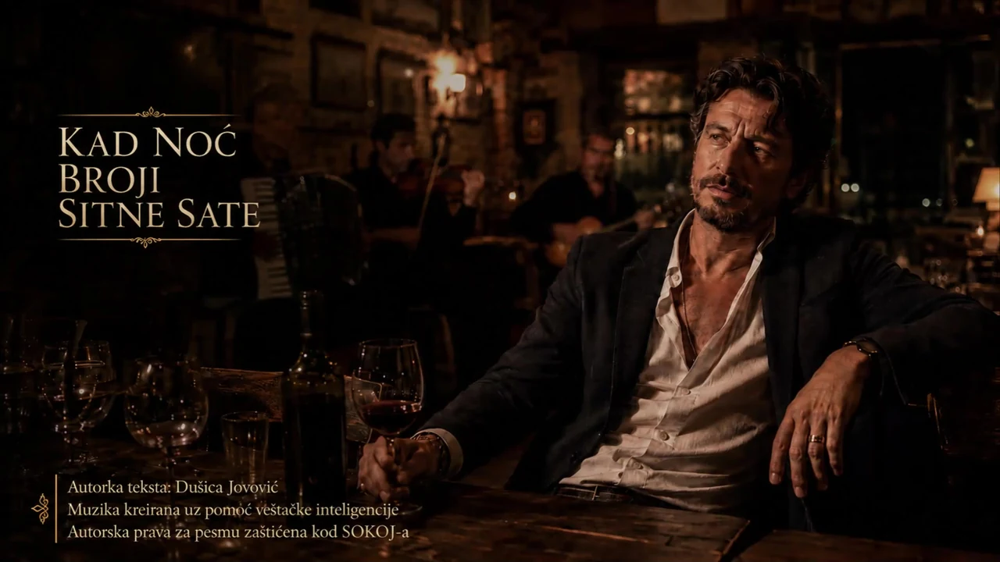
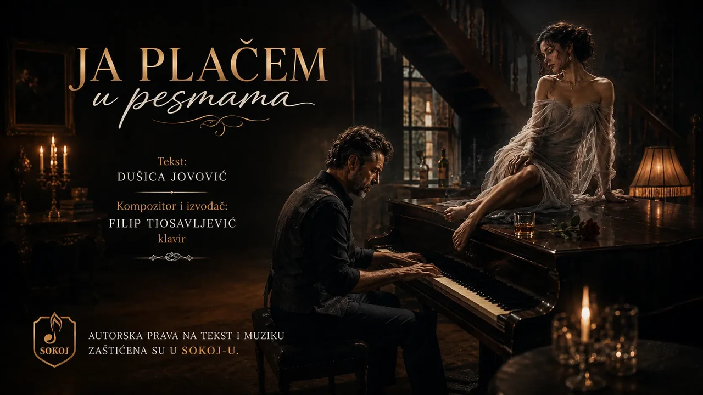
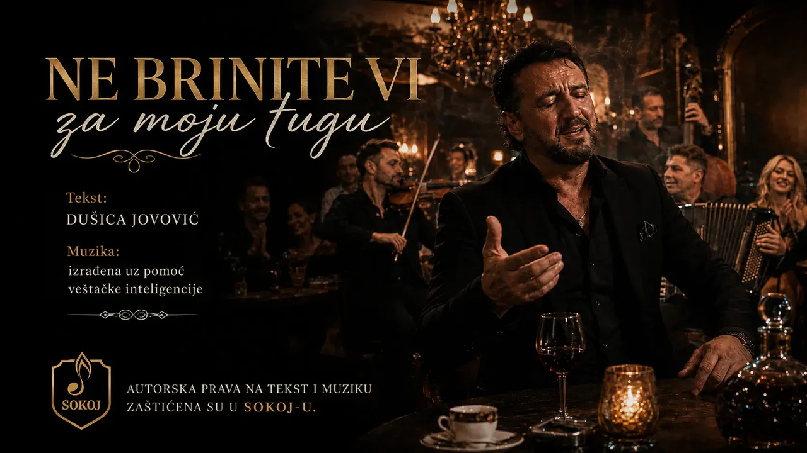
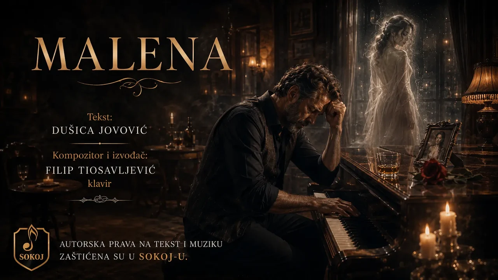
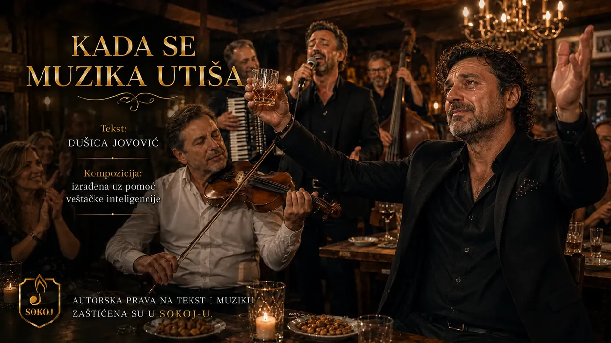

Tiha boemskaČaj sa rumom
Kišna noć, šolja čaja i uspomena koja tiho boli.
Dušica Jovović piše pesme koje nose ljubav, sećanja, bol, kafanu, osmeh i one trenutke kada srce kaže ono što reči dugo ćute. Njene autorske pesme su pretočene u muziku kao prvi korak ka izvođačima, producentima i publici koja će ih prepoznati.

Tiha boemskaKišna noć, šolja čaja i uspomena koja tiho boli.

Boemska dramaKafana, muzika i gorčina koja se preživi kroz pesmu.
Životna energija, trube i radost jača od tuge.

Emotivna, ritmičnaKada stara pesma pogodi čoveka pravo u srce.

Lagana boemskaLagana boemska pesma o vinu, sećanjima i praznim čašama.

EmotivnaPesma u kojoj suze ne kriju slabost, već ono što duša nosi.

KafanskaTuga koja ne traži sažaljenje, nego svoju meru i svoj ponos.

LjubavnaNežnija strana pesmarice, tiha emocija u jednostavnoj priči.
Pesma o dostojanstvu, karakteru i vremenu koje ne prolazi.

Kafanska emocijaTrenutak kada muzičar zasvira baš ono što srce nije izgovorilo.
Ove pesme su dostupne za ozbiljnu muzičku saradnju sa izvođačima, aranžerima i producentima koji u njima prepoznaju emociju, priču i scenski potencijal.